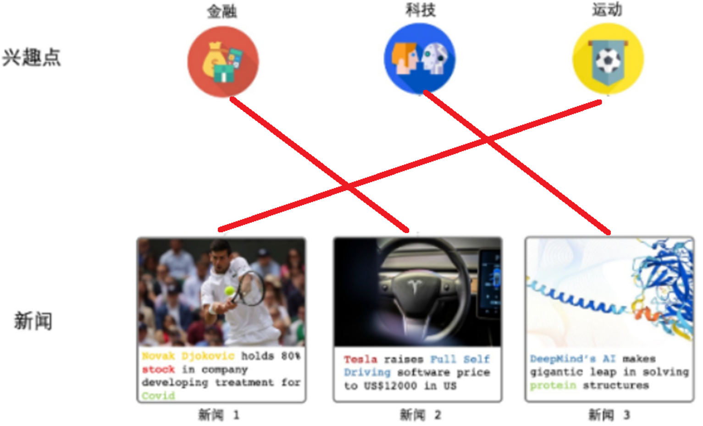
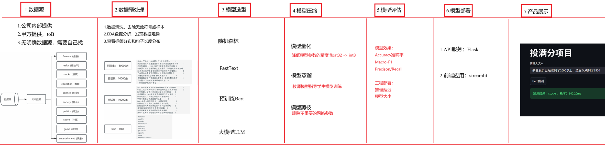
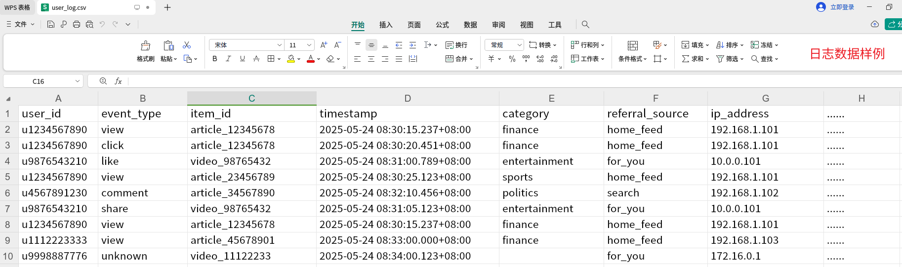
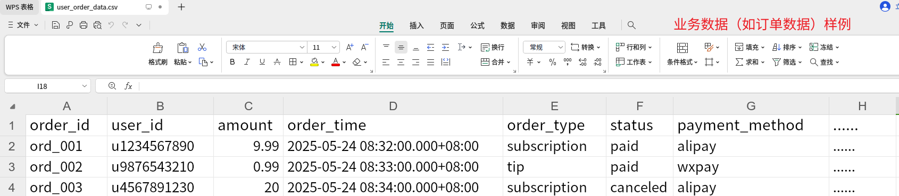
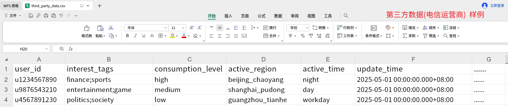
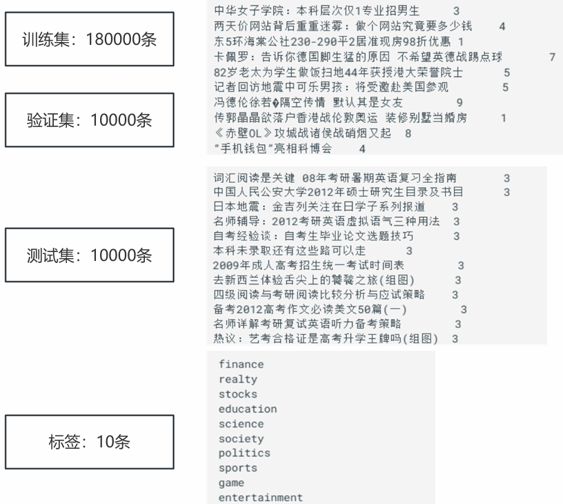
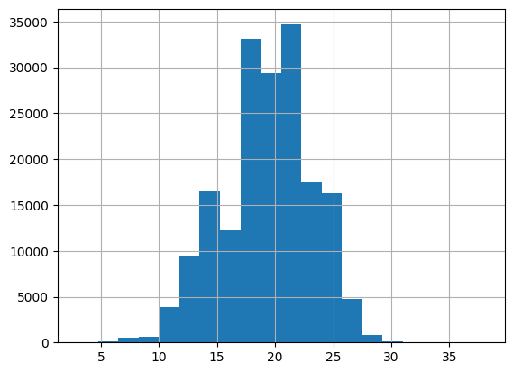
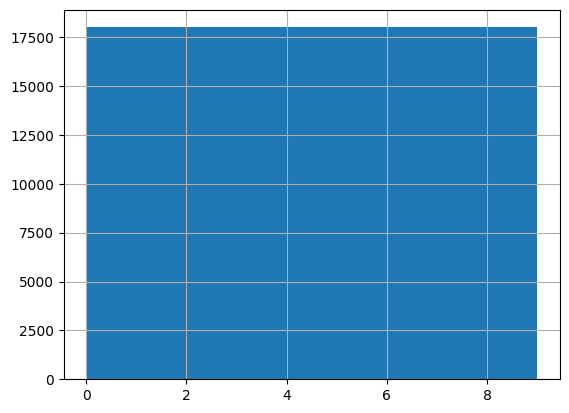

1 项目背景
学习目标
- 了解投满分项目的项目背景
- 说出投满分项目要解决什么问题
1.1 项目背景
字节跳动有两类典型内容平台：
- 抖音：以短视频推荐为主
- 今日头条：以短文本（新闻/资讯）推荐为主
在今日头条中，不同用户关注的内容类别不同，例如：
- 部分男性用户更关注历史、军事、体育
- 部分女性用户更关注旅行、娱乐、美妆
如果系统能先判断一条文本属于哪个类别，再推荐给感兴趣的用户，就能提升：
- 点击率
- 阅读时长
- 订阅与付费转化
因此，在推荐系统中需要一个关键子模块：
短文本自动分类（把文本“投递”到对应频道），属于单标签多分类，这就是 投满分项目的项目背景/业务需求。

1.2 小结
- 项目背景-今日头条推荐系统中的文本分类子任务
- 项目需求-将新闻/资讯文本自动分到正确类别
- 业务价值-支持更精准的内容推荐，提升点击率、阅读时长、订阅与付费转化
2 项目架构
2.1 投满分项目架构
学习目标
- 理解投满分项目架构
1 项目架构

2 小结
- 学习投满分项目整体项目架构，掌握整体项目情况。
3 数据集介绍
学习目标
- 了解数据类型与数据来源
- 熟悉投满分数据样例和格式
- 理解投满分数据基础分析
3.1 按业务来源划分
1 日志数据
- 定义：系统自动记录/生成的用户或系统事件数据。
- 特点：高频、数据量大、噪声较多。
- 常见示例：浏览（view）、点击（click）、点赞、停留时长等埋点日志。
- 用途：用户行为分析、推荐模型训练、线上监控。
示例： 用户行为埋点日志，记录用户在头条App的交互，如浏览文章、点击视频、点赞等。基于这样的行为数据可以用于推荐等场景。 view，用户打开文章或视频页面，页面加载完成时触发；click，用户点击标题、按钮或链接时触发等。

2 业务数据
- 定义：业务流程产生的数据，通常存储在MySQL/Hive数据库。
- 特点：字段清晰、更新频率相对低、质量较稳定。
- 常见示例：用户信息、文章信息、订单与付费记录。
- 用途：用户画像、业务分析、报表分析。
示例： 订单类数据记录用户付费行为（如订阅会员、打赏），用户类数据记录用户信息和画像（如年龄、兴趣偏好），通过 user_id 关联日志数据（用户行为）和其他业务数据（如文章元数据），为推荐模型提供静态特征。

3 第三方数据（外部数据）
- 定义：由合作方、公开数据集或API接口提供。
- 特点：来源多样、格式不统一、需要额外校验、可能要付费。
- 常见示例：外部画像标签、公开语料、行业数据。
- 用途：增强特征、补足内部数据不足。
示例： 电信运营商提供的用户画像数据，基于用户通话、流量使用、地理位置等生成兴趣标签、消费能力、行为特征，增强推荐系统精准性。

3.2 按数据格式划分
1 结构化数据（Structured）
- 形式：规则二维表结构（行列），字段类型明确。
- 示例：MySQL/Hive中的用户表、订单表，Excel/CSV 表格等。
- 优点：易查询、易统计、易建模。
2 半结构化数据（Semi-structured）
- 形式：有一定层次或键值结构，但不固定表头。
- 示例：JSON、XML、HTML、部分日志。
- 优点：灵活；难点：入模前需解析与展开。
3 非结构化数据（Unstructured）
- 形式：无固定字段结构。
- 示例：文本、图片、音频、视频。
- 优点：信息丰富；难点：需先特征化（如分词、向量化）。
文本分类任务重点处理非结构化文本。
3.3 项目数据来源
本项目属于内部项目，实际项目中的数据来源有多种情况:
第一类: 内部项目，公司内部数据部门提供
第二类: TOB项目，甲方提需求, 并提供数据
第三类: 其他。无明确来源
3.4 本项目数据概览
数据目录：01-data

class.txt：类别标签文件（10个类别，每行1个标签）train.txt：训练集,180kdev.txt：验证集,10ktest.txt：测试集,10kstopwords.txt：停用词文件，用于删除停用词
3.5 小结
- 介绍了数据类型
- 介绍了数据来源
- 介绍了项目数据整体概览
4 数据集分析
学习目标
- 掌握对项目数据集进行分析的代码.
4.1 代码逻辑图
数据及代码位置：01-data
两个脚本：config.py与data_eda.py
config.py：配置文件，统一管理全局配置信息，包括数据路径、类别信息等。方便项目管理和维护
data_eda.py：进行EDA探索性数据分析，比如分析样本量和类别分布情况
4.2 代码实现
1 配置文件config.py
""" 配置文件，统一管理全局配置信息，包括数据路径、类别信息等。方便项目管理和维护 """ import os # 1.定义配置类，集中管理项目中所有数据文件的路径 class Config(): # 1.初始化函数 def __init__(self): # 0.初始化根路径 self.root_path = r'project/01-data' # 1.初始化数据集路径 self.train_datapath = os.path.join(self.root_path, "train.txt") self.dev_datapath = os.path.join(self.root_path, "dev.txt") self.test_datapath = os.path.join(self.root_path, "test.txt") self.stop_words_path = os.path.join(self.root_path, "stopwords.txt") # 2.初始化类别文件路径 self.class_datapath = os.path.join(self.root_path, "class.txt") # 2.测试 if __name__ == '__main__': config = Config() print(config.train_datapath) print(config.dev_datapath) print(config.test_datapath)
project/01-data\train.txt
project/01-data\dev.txt
project/01-data\test.txt
2 数据分析data_eda.py
""" EDA: 探索性数据分析(Exploratory Data Analysis)， 就是分析数据，来发现数据规律和异常，一般结合图形可视化方式 """ # 导包 import pandas as pd # 处理结构化表格数据 from collections import Counter # 统计标签出现的次数 from networkx.algorithms.bipartite.basic import density # from config import Config # 获取项目的配置信息 import matplotlib.pyplot as plt # 绘图 import seaborn as sns # 1.初始化配置 # 1.1 创建Config实例 config = Config() # 1.2 从配置中获取数据集路径 train_datapath = config.train_datapath test_datapath = config.test_datapath dev_datapath = config.dev_datapath # 2.读取数据 train_data = pd.read_csv(train_datapath, sep='\t', names=['text', 'label']) # 打印前5行 print(train_data.head()) # 打印形状 print(train_data.shape) print("-"*40) # 3.统计标签分布 # 统计每个标签出现的次数 label_counts = Counter(train_data['label']) print(f"训练集标签分布: \n{label_counts}") # 遍历统计标签出现次数 for label, count in label_counts.items(): print(f"标签{label}出现次数: {count}") # 4.统计文本长度 # 4.1 新增一列text_length, 保存文本长度 # 使用apply方法获取text_length # train_data['text_length'] = train_data['text'].fillna('').apply(lambda x: len(str(x))) # 使用向量化操作str.len()方法获取text_length train_data['text_length'] = train_data['text'].fillna('').str.len() # 4.2 打印提示信息 print(f"文本长度统计: \n{train_data['text_length'].describe()}") # 4.3 显示文本内容和长度 print(f"文本内容和长度：\n{train_data[['text', 'text_length']].head()}") # 5.绘制直方图 # 长度直方图 # sns.histplot(train_data['text_length'], bins=20, kde=True) train_data['text_length'].hist(bins=20,grid=True) plt.show() # 标签直方图 # sns.countplot(x="label",data=train_data,hue="label",legend=False) train_data['label'].hist() plt.show()
text label
0 中华女子学院：本科层次仅1专业招男生 3
1 两天价网站背后重重迷雾：做个网站究竟要多少钱 4
2 东5环海棠公社230-290平2居准现房98折优惠 1
3 卡佩罗：告诉你德国脚生猛的原因 不希望英德战踢点球 7
4 82岁老太为学生做饭扫地44年获授港大荣誉院士 5
(180000, 2)
----------------------------------------
训练集标签分布:
Counter({3: 18000, 4: 18000, 1: 18000, 7: 18000, 5: 18000, 9: 18000, 8: 18000, 2: 18000, 6: 18000, 0: 18000})
标签3出现次数: 18000
标签4出现次数: 18000
标签1出现次数: 18000
标签7出现次数: 18000
标签5出现次数: 18000
标签9出现次数: 18000
标签8出现次数: 18000
标签2出现次数: 18000
标签6出现次数: 18000
标签0出现次数: 18000
文本长度统计:
count 180000.000000
mean 19.212578
std 3.863804
min 3.000000
25% 17.000000
50% 19.000000
75% 22.000000
max 38.000000
Name: text_length, dtype: float64
文本内容和长度：
text text_length
0 中华女子学院：本科层次仅1专业招男生 18
1 两天价网站背后重重迷雾：做个网站究竟要多少钱 22
2 东5环海棠公社230-290平2居准现房98折优惠 25
3 卡佩罗：告诉你德国脚生猛的原因 不希望英德战踢点球 25
4 82岁老太为学生做饭扫地44年获授港大荣誉院士 23

